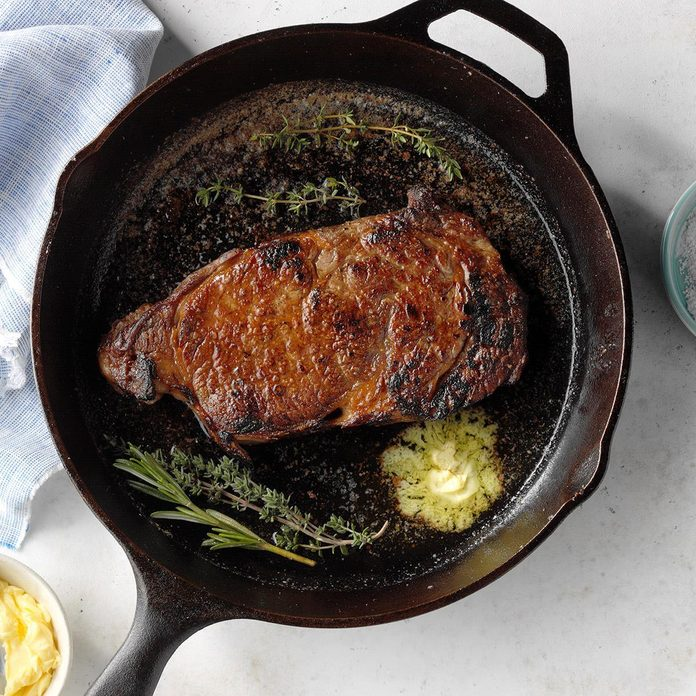

Cast Iron Skillet Steak

CAST-IRON SKILLET STEAK TIPS
Can you cook steak in butter?
Yes, you can cook steak in butter. Baste your steak with melted butter and herbs or use a compound butter as a topper once cooked on the stove.
The butter will melt into the steak, giving it even more flavor. You can also try any of these steak flavor boosters!
How can I make my steak juicy and tender?
For the juiciest and most tender steaks, pick out a steak with a healthy amount of marbling. It may be more expensive, but the tenderness and
juiciness will be well worth it. Here are other helpful tips for delicious steaks.
Can I cook steak in a nonstick pan?
If you don’t have a cast-iron skillet, you can use a nonstick pan. To cook steak on a nonstick pan, get the pan nice and hot first. Place the
steak on the hot pan and don't touch it until you flip it to the other side. Once the meat is seared, turn down the temperature for medium or
well-done steaks. You can also finish the steak in a 350° oven.
Ingredients
- 3 teaspoons kosher salt, divided
- 1 beef New York strip or ribeye steak (1 pound), 1 inch thick
Steps
- Remove steak from refrigerator and sprinkle with 2 teaspoons salt; let stand 45-60 minutes.
- Preheat a cast-iron skillet over high heat until extremely hot, 4-5 minutes. Sprinkle remaining 1 teaspoon salt in bottom of skillet; pat
beef dry with paper towels. Place steak in skillet and cook until easily moved, 1-2 minutes; flip, placing steak in a different section
of the skillet. Cook 30 seconds and then begin moving steak, occasionally pressing slightly to ensure even contact with skillet.
- Continue turning and flipping until cooked to desired degree of doneness (for medium-rare, a thermometer should read 135°; medium, 140°;
medium-well, 145°), 1-2 minutes.